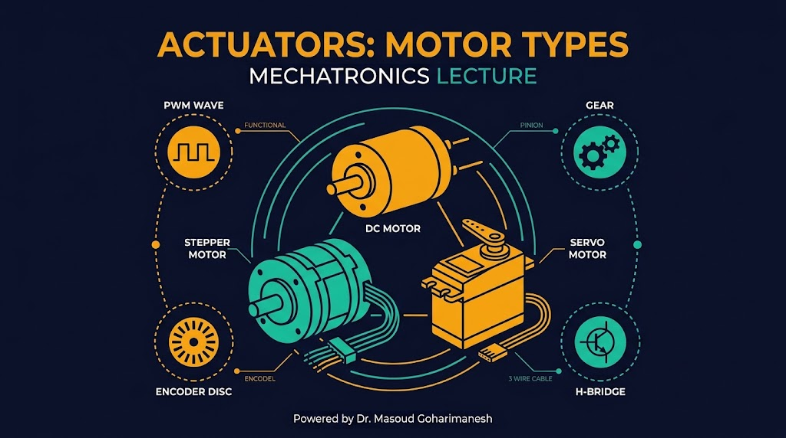
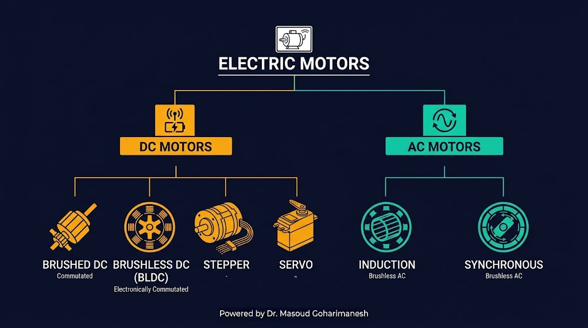
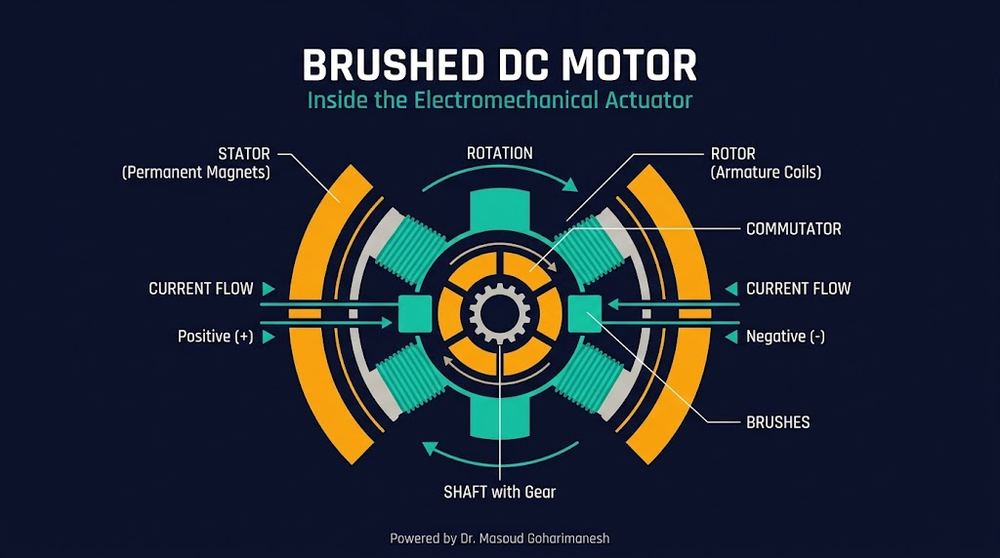
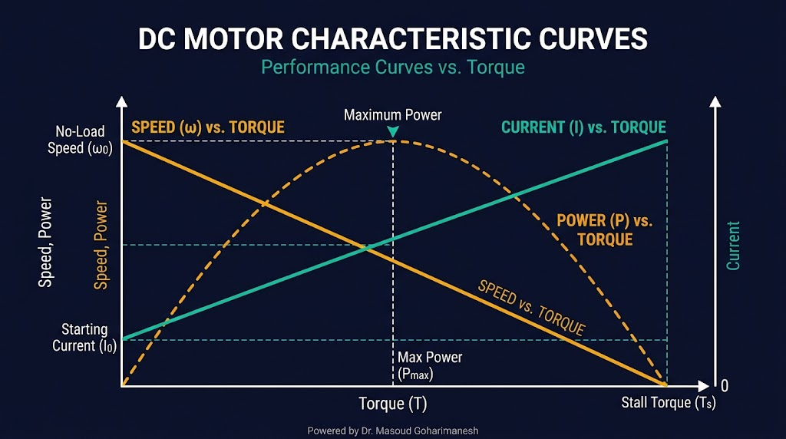
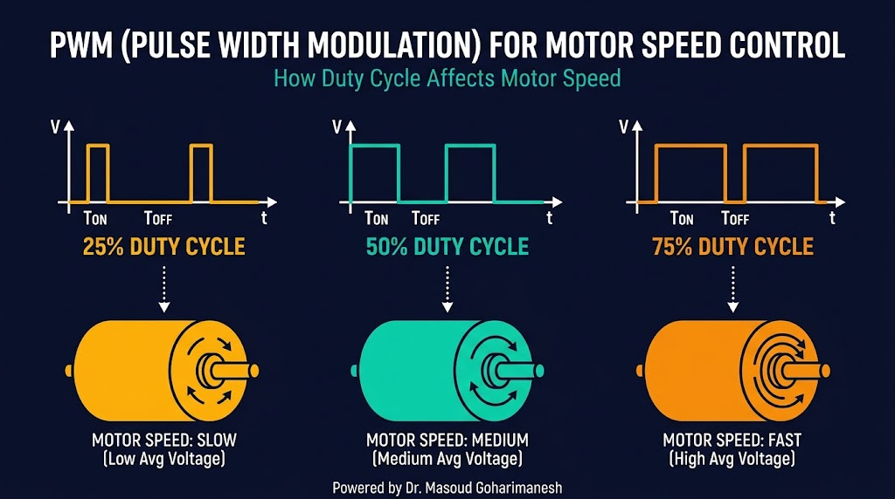
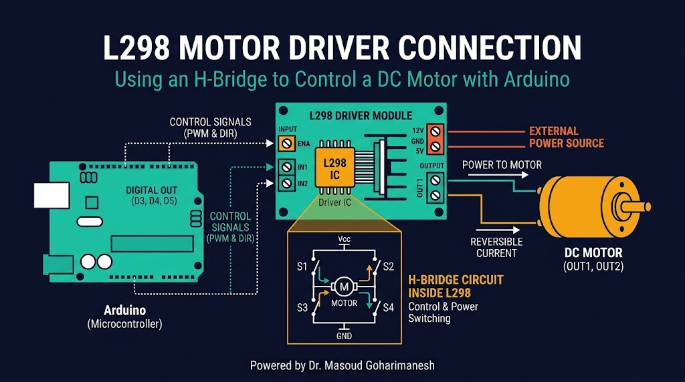
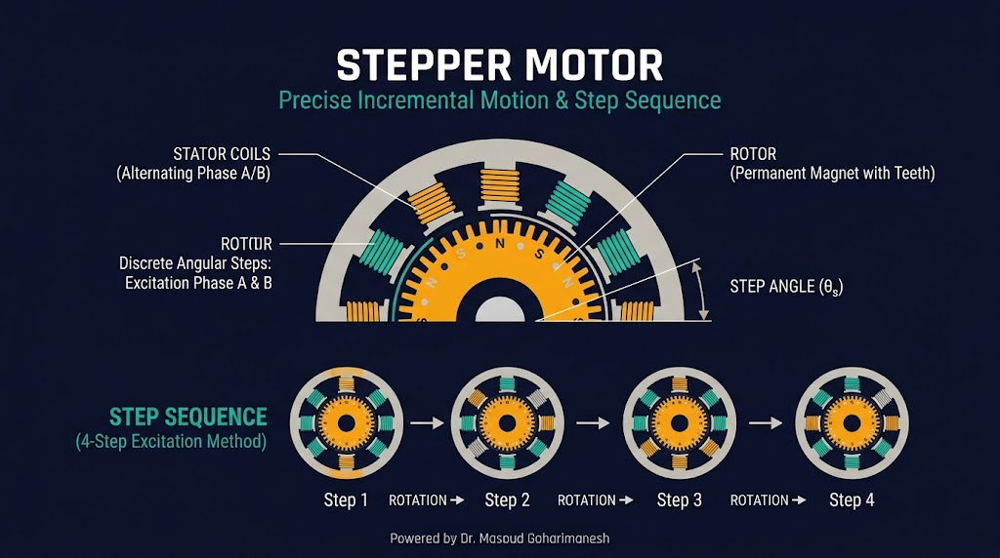
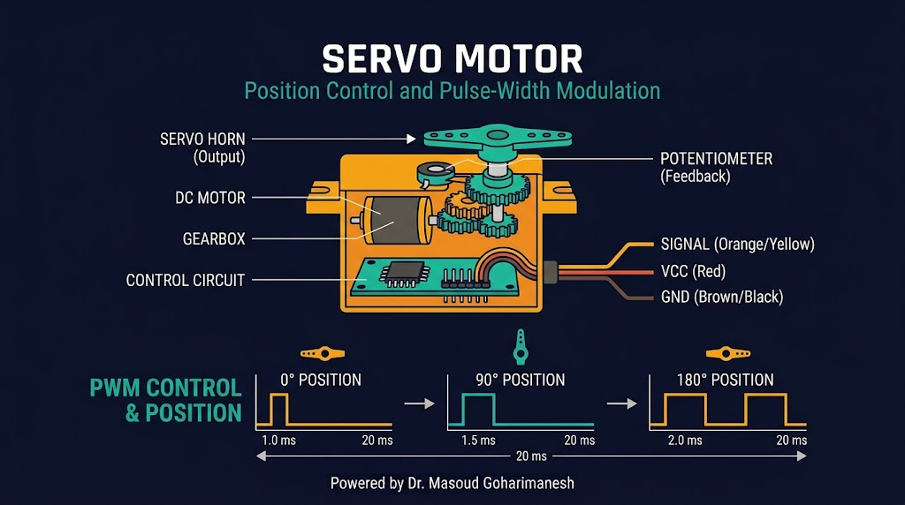

موتورهای DC، استپر و سروو
دکتر مسعود گوهریمنش
دانشیار گروه مهندسی مکانیک
دانشگاه تربت حیدریه | پاییز ۱۴۰۵
موتورها قلب تپنده هر سیستم مکاترونیکی هستند!
برای یک ربات متحرک، کدام نوع موتور مناسبتر است: DC، استپر یا سروو؟ چرا؟
از DC ساده تا BLDC پیشرفته

سادهترین و پرکاربردترین موتور

جریان از جاروبکها به کموتاتور و سپس به سیمپیچ روتور میرسد. برهمکنش میدان مغناطیسی روتور و استاتور، گشتاور تولید کرده و روتور میچرخد. کموتاتور جهت جریان را در هر نیمدور معکوس میکند تا چرخش پیوسته باشد.
رابطه سرعت، گشتاور، جریان و توان

رابطه معکوس: با افزایش بار، سرعت کاهش مییابد
رابطه مستقیم: با افزایش بار، جریان افزایش مییابد
حداکثر توان در میانه محدوده گشتاور
نقطهای که موتور با حداکثر راندمان و بدون گرم شدن بیش از حد کار میکند. در انتخاب موتور، همیشه به این نقطه توجه کنید.
مدولاسیون پهنای پالس برای کنترل سرعت

D: نسبت زمان روشن به کل دوره (۰ تا ۱۰۰٪)
مثال: D=50% → سرعت نصف، D=100% → سرعت کامل
analogWrite(9, 128); // 50%
رابط بین میکروکنترلر و موتور

ولتاژ موتور: 5 تا 35 ولت | جریان هر کانال: تا 2 آمپر | کنترل: 2 کانال مستقل + PWM سرعت
حرکت گسسته و دقیق

Step Angle: زاویه هر پله — معمولاً ۱.۸° (۲۰۰ پله در دور)
سه روش اصلی درایو
یک فاز فعال در هر لحظه. سادهترین روش، گشتاور کم.
دو فاز فعال. گشتاور بیشتر، همان Step Angle.
تناوب یک و دو فاز. نرمتر، دقت دو برابر.
با کنترل جریان سینوسی، میتوان هر پله را به ۴، ۸، ۱۶ یا ۳۲ زیرپله تقسیم کرد. حرکت بسیار نرم و بیصدا — پرکاربرد در پرینتر سهبعدی و CNC.
ULN2003 و A4988
بهترین کتابخانه برای کنترل استپر با شتاب و سرعت دلخواه. توابع کلیدی: setMaxSpeed(), setAcceleration(), moveTo(), run()
کنترل دقیق موقعیت زاویهای

پالس ۱ms → زاویه ۰° | پالس ۱.۵ms → زاویه ۹۰° | پالس ۲ms → زاویه ۱۸۰° — فرکانس ۵۰ هرتز
کدام موتور برای کدام کاربرد؟
| ویژگی | DC ساده | استپر | سروو |
|---|---|---|---|
| کنترل | سرعت (PWM) | موقعیت دقیق | زاویه ۰-۱۸۰° |
| دقت | پایین | بالا | متوسط-بالا |
| گشتاور | متوسط | بالا (低速) | بالا (با گیربکس) |
| قیمت | ارزان | متوسط | متوسط |
| کاربرد | ربات متحرک | CNC، پرینتر | بازوی ربات |
نکته: در پروژههای رباتیک، اغلب از ترکیب DC (حرکت درشت) + انکودر (بازخورد) یا استپر (حرکت دقیق) یا سروو (زاویه محدود) استفاده میشود.
تحلیل نیاز و انتخاب
RPM = (0.5 × 60) / (π × 0.1) ≈ ۹۵ دور بر دقیقه
کنترل سرعت موتور DC با PWM
با تغییر Duty Cycle و ولتاژ، رفتار موتور را ببینید.
جلسه ششم - عملگرها (بخش اول)
نکات کلیدی جلسه ششم
جلسه بعد: عملگرها (بخش دوم) — هیدرولیکی، پنوماتیکی، شیرها
Powered by Dr. Masoud Goharimanesh